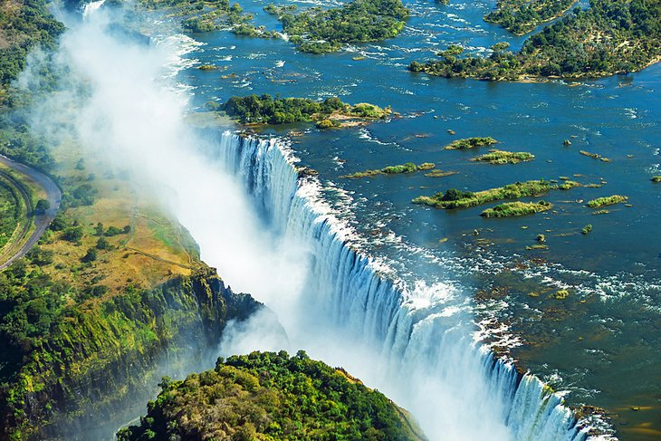

Discover Africa
Click on the images to see more detail about them.
-

-

- 
Explore Cape Town, South Africa
One of the most beloved destinations on the continent, Cape Town sits at the southern tip of South Africa, near where the Atlantic Ocean and Indian Ocean meet at the Cape of Good Hope. It is a culturally rich and visually stunning city that is very easy to fall in love with on a first visit.
Table Mountain rises from the center of the city, while the striking Twelve Apostle rock formations beyond provide the backdrop for gorgeous white-sand beaches, like Clifton and Camps Bay, along its Atlantic Ocean coastline.
The city is also home to a plethora of museums, galleries, local boutiques, and world-class restaurants and hotels.
Witness the Pyramids of Giza, Egypt
Watching the sun rise or set over the Pyramids of Giza from the back of a camel is an experience you'll never forget.
The pyramids and the Great Sphinx date back to the 26th century BCE and are Egypt's most iconic attractions.
The Pyramids of Giza are easy to access from Egypt's capital and largest city, Cairo, which is equally fascinating to visit. Set on the banks of the Nile River, Cairo is a chaotic and buzzy place that appears to never slow down, even in the dead of night.
Experience Victoria Falls, Zimbabwe and Zambia
Visit Victoria Falls during the rainy seasons, when the water volume is high, and you'll understand why locals call this impressive waterfall "The Smoke That Thunders."
The sound of water rushing over rock before dropping into a pool some 300-plus-feet below sounds like the roll of thunder, and the mist that spews back up resembles thick smoke. It is an impressive sight.
Protected as a UNESCO World Heritage site, Victoria Falls is on the mighty Zambezi River and creates the border between Zimbabwe and Zambia. This waterfall is not only impressive for its dramatic drop but also for its length, which creates a 1.7-kilometer-long curtain of water as it drops.
Find Serenity by the Sea and in the Sahara in Tunisia
Facing towards Europe's Mediterranean coastline, Tunisia is Africa's most northerly country. It is a gorgeous, sun-soaked destination, where European and Arab influences blend together.
Home to a beautiful stretch of beaches on the Mediterranean Sea, Tunisia is a popular vacation destination for Europeans seeking some winter sun. The island Djerba is a perfect spot to indulge.
Afterwards, venture into the Sahara Desert for more mesmerizing scenery. The desert covers much of Tunisia's interior, but its most stunning section is known as the Grand Erg Oriental. Here, you'll find a rolling sea of orange sand juxtaposed against a bright blue sky.
Summit Mount Kilimanjaro in Tanzania
With an elevation of 19,341 feet, Tanzania's Mount Kilimanjaro ("Kili" for short) is Africa's highest mountain and also holds the world record for the highest single freestanding mountain (it isn't part of a range). Rising from the plains of the Serengeti, it is a dormant volcano and creates a stunning backdrop for wildlife safaris in the region.
Most people visit Kili to climb to its summit. It is especially popular because the trek involves no rock climbing expertise or mountaineering equipment.
You also won't face the extreme weather challenges of climbing other continents' highest peaks, like Mt. Everest. You will need to be in good shape and adjusted to the altitude.
Go on Safari in Kruger National Park, South Africa
South Africa's Kruger National Park is one of Africa's oldest conservation areas and a top safari destination on the continent.
This vast park, which actually extends into Mozambique to the east, is home to South Africa's most diverse wildlife population. It is also surrounded by upscale private reserves, like Sabi Sands Game Reserve, which animals can cross into and out of at will.
Kruger is also a safari destination within reach for many different budgets. As a national park, visitors can actually explore Kruger on self-drive safaris and then camp or stay in national park lodges.
About Africa
- It is the second largest continent of the world
- It is one of the 7 continents of the world and is only smaller than Asia.
- There are 54 countries in Africa
- These include Egypt, Kenya, Nigeria and Ethiopia.
- It is home to the world’s longest river, The Nile
- The Nile is the longest river in the world – although some researchers are arguing that The Amazon is longer. It flows through many different African countries and is the main water source of Egypt, Sudan and South Sudan.
- 1.2 billion people live in Africa
- That’s 16% of the world’s population.
Contact
- contact@africa.com
- 555 748 458
- Kenton Lane
- Newcastle, UK